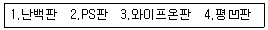

인쇄기능사 (2004-07-18 기출문제)
1과목: 임의구분
1. 분광반사율이 다른 두가지의 색이라도 특수한 조건의 어떤 조명 아래에서는 같은색으로 느껴지는 현상을 무엇이라 하는가?
- 조건등색(metamerism)
- 광원의 연색성(演色性)
- 스펙트럼(spectrum) 현상
- 물질의 굴절율(屈折率)
(정답률: 알수없음)

2. 서로 보색(補色)관계에 있는 색이다. 틀린 것은?
- 주황과 자주
- 연두와 보라
- 빨강과 청록
- 노랑과 남색
(정답률: 알수없음)
3. 마젠타(magenta)잉크와 시안(cyan)잉크를 혼합하여 재현 할 수 있는 색은?
- Green
- Red
- White
- Blue
(정답률: 알수없음)
4. 사진처리공정 중 정지액에 다른 액성이 유입되어 pH가 변화되지 않게 pH값을 유지시켜 주는 작용을 하는 것은?
- NaCl
- CH3COONa
- CH3COOH
- NaOH
(정답률: 알수없음)
5. [H+] = [OH-]이면 이 액성의 pH는?
- pH 1
- pH 7
- pH 10
- pH 14
(정답률: 알수없음)
6. 잉크의 전이율에 관계되는 요인들이다. 관계가 가장 적은 것은?
- 인쇄 속도
- 인쇄 압력
- 인쇄판의 재료 및 크기
- 잉크의 점도
(정답률: 알수없음)
7. 각종 사진제판에서 여러가지 스크린이 사용되고 있는데 그 중 백선 스크린이 사용되는 제판 방식은?
- 볼록판 제판
- 평판 제판
- 오목판 제판
- 공판 제판
(정답률: 알수없음)
8. 일반적으로 무압 인쇄라고 할 수 있는 것은?
- 정전인쇄
- 볼록판인쇄
- 평판인쇄
- 공판인쇄
(정답률: 알수없음)
9. 일반적으로 구리를 판재로 하여 인쇄하는 인쇄방식은?
- 평판인쇄
- 그라비어인쇄
- 볼록판인쇄
- 공판인쇄
(정답률: 알수없음)
10. 제책에 있어서 속장과 겉장을 연결하는 부분이며 속장의 내구력을 좋게 하는 작업공정은?
- 쪽맞추기
- 패킹
- 홈내기
- 면지붙이기
(정답률: 알수없음)
11. 속장을 철사로 매고 등에 풀칠을 한 다음, 한 장으로 된 표지를 싸거나, 2장으로 된 표지를 속장과 같이 철사로 매어 겹쳐 붙이는 제책 방법은?
- 양장
- 호부장
- 중심철
- 간이
(정답률: 알수없음)
12. 전하가 이동하는 현상은?
- 전압
- 전류
- 저항
- 오옴
(정답률: 알수없음)
13. 51[V]의 전원 전압에 의하여 3[A]의 전류가 흐르는 전기회로가 있다. 이 회로의 저항은 몇 [Ω]인가?
- 17
- 18
- 19
- 20
(정답률: 알수없음)
14. 다음 중 디아조(diazo)감광제를 주체로 한 인쇄판은?

- 1, 2
- 1, 3
- 2, 3
- 2, 4
(정답률: 알수없음)
15. 일반적으로 사전 또는 두꺼운 단행본 등에 사용되는 제책 방식으로 가장 바람직한 것은?
- 호부장
- 양장
- 간이제책
- 중철
(정답률: 알수없음)
16. 잉크 드라이어의 최대 첨가량은 어느 정도가 가장 적당한가?
- 20% 이내
- 15% 이내
- 50% 이내
- 5% 이내
(정답률: 알수없음)
17. 다음 인쇄잉크 중에서 광택에 중점을 두고 만들어진 잉크는?
- 퀵셋트 잉크
- 수지형 잉크
- 글로스 잉크
- 아마인유형 잉크
(정답률: 알수없음)
18. 인쇄잉크의 성질중에서 택(tack)은 잉크의 어떤 성질과 가장 관계가 깊은가?
- 색농도
- 점착성
- 건조성
- 전이성
(정답률: 알수없음)
19. 습수 롤러에 몰톤(molton)을 감는 주된 이유는?
- 습수 보유
- 습수 제거
- 산화 방지
- 내쇄력 증대
(정답률: 알수없음)
20. 블랭킷의 필수조건이 아닌 것은?
- 두께가 균일해야 한다.
- 친유성이 있어야 한다.
- 요변성이 있어야 한다.
- 탄성복원율이 높아야 한다.
(정답률: 알수없음)
2과목: 임의구분
21. 아래색 잉크 위에 잉크가 잘 오르지 않는 현상은?
- 크리스탈리제이션
- 케이킹
- 파일링
- 스커밍
(정답률: 알수없음)
22. 잉크가 판면, 잉크 롤러, 잉크 이김판에 쌓이는 현상은?
- 콜렉팅(collecting)
- 피킹(picking)
- 초킹(chalking)
- 케이킹(caking)
(정답률: 알수없음)
23. 다음 중 내쇄력이 가장 큰 판은?
- 평오목판
- 난백판
- 다층평판
- PS판
(정답률: 알수없음)
24. 잉크가 실같이 되어서 어느 정도까지 늘어났다가 끊어지는 정도를 말하는 것은?
- 예사성(length)
- 뜯김(picking)
- 전이성(transference)
- 응집(flocculation)
(정답률: 알수없음)
25. 상대습도가 높아지면 급격히 떨어지는 종이의 강도는?
- 인열강도
- 신장도
- 인장강도
- 평활도
(정답률: 알수없음)
26. 인쇄 잉크용 무기안료에 속하는 것은?
- 카본 블랙
- 아조 안료
- 레이크 레드C
- 벤지딘 옐로
(정답률: 알수없음)
27. 은백색의 금속 광택을 지닌 가볍고 무른 금속으로 공기 중에서는 쉽게 산화되며 이 때 비교적 단단한 산화피막이 금속 표면에 형성되어 광택을 잃게 되는 금속은?
- 구리
- 아연
- 알루미늄
- 니켈
(정답률: 알수없음)
28. 다음 중 종이의 무게 표시 단위로 맞는 것은?
- g/m2
- g/ℓ
- ℓ/mm2
- mg/m
(정답률: 알수없음)
29. 사전이나 성서 등에 사용되는 양지로 얇고 불투명하며 강한 인쇄용지는?
- 인디아지
- 코트지
- 모조지
- 트레싱지
(정답률: 알수없음)
30. 비히클(Vehicle)에 대한 설명 중 틀린 것은?
- 안료의 입자를 판에서 종이까지 운반한다.
- 피인쇄체에 옮겨진 후 빨리 고체막을 형성한다.
- 잉크의 색을 강하게 할 때 사용한다.
- 주로 아마인유 등의 건성유가 사용된다.
(정답률: 알수없음)
31. 오프셋 인쇄기에서 베어러 접촉법의 장점이라고 볼 수 없는 것은?
- 베어러는 판과 블랭킷면의 위치를 정확한 접촉위치를 결정해 주는 기준점을 제공하여 준다.
- 각 통의 베어링에 평균적으로 일정한 압력이 작용하므로 마멸을 줄인다.
- 각 통의 전동 기어가 피치원 상에서 항상 정확하게 물리게 해 준다.
- 두꺼운 종이에서 화상의 길이가 실제와 같이 인쇄되도록 할수 있는 조절 장치가 필요하지 않으며 베어러 띄움법이라고도 한다.
(정답률: 알수없음)
32. 고무통 2개 사이로 종이가 통과하여 양면 인쇄되는 형식은?
- 3통형
- 5통형
- 드럼형
- B-B형
(정답률: 알수없음)
33. 윤전기에서 스톤 리일(Stone reel)의 역할은?
- 급지장치
- 배지장치
- 가압장치
- 맞춤장치
(정답률: 알수없음)
34. 오프셋 인쇄기를 크게 분류하면?
- 급지 장치, 잉크 장치, 인쇄 장치
- 인쇄 장치, 물 장치, 송달 장치
- 급지 장치, 인쇄 장치, 배지 장치
- 급지 장치, 건조 장치, 배지 장치
(정답률: 알수없음)
35. 오프셋 인쇄기의 통 배열 방법이 아닌 것은?
- 수직형
- 직각형
- 둔각형
- 유니버셜형
(정답률: 알수없음)
36. 전동효율이 가장 좋은 순서대로 된 것은?
- 기어 - 벨트 - 체인 - 로우프
- 기어 - 체인 - 벨트 - 로우프
- 벨트 - 기어 - 체인 - 로우프
- 벨트 - 체인 - 로우프 - 기어
(정답률: 알수없음)
37. 인쇄할 때 인쇄속도가 빠르면 잉크와 종이의 접촉 시간은 어떻게 되는가?
- 길다.
- 짧다.
- 같다.
- 속도와는 관계가 없다.
(정답률: 알수없음)
38. 인쇄전 준비작업 순서가 맞는 것은?
- 축임물을 채운다 - 잉크를 넣는다 - 시험인쇄를 한다
- 시험인쇄를 한다 - 축임물을 채운다 - 잉크를 넣는다
- 시험인쇄를 한다 - 잉크를 넣는다 - 축임물을 채운다
- 잉크를 넣는다 - 시험인쇄를 한다 - 축임물을 채운다
(정답률: 알수없음)
39. 윤활유를 주는 횟수가 가장 많아야 될 곳은?
- 기어
- 저속 회전부분
- 베어링
- 중압이 가해지는 부분
(정답률: 알수없음)
40. 통꾸밈 점검시 블랭킷통과 압통 간의 압력조절을 하는 것은?
- 터언 버클 바아(turn buckle bar)
- 클러치(clutch)
- 실린더 트러스트(cylinder thrust)
- 인터널 기어(internal gear)
(정답률: 알수없음)
3과목: 임의구분
41. 랩어라운드 인쇄기용 판으로서 가장 적합하지 않은 것은?
- 아연판
- 합성수지판
- 고무판
- 연판
(정답률: 알수없음)
42. 오프셋 인쇄시 축임물을 사용하는 가장 큰 이유는?
- 기계의 가동으로 인하여 발생되는 열을 식히기 위해서
- 피인쇄체의 지분을 줄이기 위해서
- 기름과 물과의 반발성을 이용하여 인쇄가 잘 되게하기 위해서
- 정전기 발생을 방지하여 피인쇄체의 원활한 급지를 위해서
(정답률: 알수없음)
43. 뒷묻음이 발생될 수 있는 원인이 아닌 것은?
- 인쇄시 잉크량이 많다.
- 파우더를 산포한다.
- 인쇄물을 난로옆에 둔다.
- 인쇄물을 저온장소에 둔다.
(정답률: 알수없음)
44. 물체의 마찰로 생기는 마찰열을 제거하는 역할을 하는 급유 효과는?
- 감마효과
- 냉각효과
- 방청효과
- 응력분산효과
(정답률: 알수없음)
45. 작업장의 소음대책으로 볼 수 없는 것은?
- 소음원의 차단
- 보호구 사용(귀마개, 귀덮개)
- 소음원의 제거
- 종전의 작업방법 고수
(정답률: 알수없음)
46. 감전사고를 예방하기 위한 유의사항으로 옳지 않은 것은?
- 전기기계, 기구의 외함과 구조물은 접지한다.
- 작업자에게 안전교육을 실시한다.
- 전기설비, 전기기계, 기구의 점검 등을 철저히 한다.
- 충전부를 차폐하지 말고 배선기구 및 기계 기구 등을 2중 절연 구조로 하여 충전부에 접촉시킨다.
(정답률: 알수없음)
47. 마찰식 급지기에 속하는 것은?
- 유니버설 급지기
- 덱스터 급지기
- 로타리 급지기
- 스트림 급지기
(정답률: 알수없음)
48. 급유할 때 미리 알아야 할 사항 중에서 주유기간을 정할 때 가장 직접적으로 관련이 되는 것은?
- 급유해야 할 부분
- 급유량과 빈도
- 기름의 종류
- 급유도구와 방법
(정답률: 알수없음)
49. 시즈닝(seasoning)을 가장 정확하게 설명한 것은?
- 종이의 습도를 낮추기만 하는 것이다.
- 종이의 습도를 높이기만 하는 것이다.
- 종이의 습도를 인쇄실의 습도와 같게 하는 것이다.
- 종이의 습도를 무조건 상대습도 60%로 만드는 것이다.
(정답률: 알수없음)
50. 배지부에 장치되어 있는 것은?
- 서커장치
- 피더보드
- 종이운반장치
- 파우더 스프레이장치
(정답률: 알수없음)
51. 블랭킷(blanket) 뒷면의 화살표와 블랭킷통의 회전방향이 일치하지 않았을 때 생기는 현상과 가장 거리가 먼것은?
- 부분적 가늠불량
- 망점의 더블
- 때낌
- 색균형 파괴
(정답률: 알수없음)
52. 판통을 블랭킷통보다 큰지름으로 꾸미는 통꾸밈 방법은?
- 동경법
- 트루롤링법
- 혼합법
- 언더커트법
(정답률: 알수없음)
53. 인쇄전 손지를 20∼30매정도(또는 그 이상) 인쇄하는 주된 이유는?
- 종이의 시즈닝 상태를 알아 신축정도를 조절하기 위하여
- 인쇄 흐름을 가동상태에서 잉크량 및 물상태 등을 조절하기 위하여
- 판, 블랭킷의 물 및 용제를 제거하고 정지 확인 후 물량을 조절하기 위하여
- 정상, 느린속도에서 잉크 전이율을 가감 조절하기 위하여
(정답률: 알수없음)
54. 본인쇄 중의 점검 사항이 아닌 것은?
- 잉크량의 과부족
- 가늠상태
- 더러움
- 색배합
(정답률: 알수없음)
55. 다량 인쇄에 적합하며 인쇄 속도가 빠른 인쇄 형식은?
- 볼록판식
- 평압식
- 윤전식
- 원압식
(정답률: 알수없음)
56. 인쇄 준비작업 체크리스트에 기입할 사항으로 적합하지 않는 것은?
- 작업전표 및 지시서의 확인
- 지정된 위치에 인쇄되고 있는가
- 가늠이 잘 맞고 있는가
- 인쇄원가는 적당한가
(정답률: 알수없음)
57. 오프셋 인쇄기에서 나온 인쇄지가 서로 달라 붙는 사고는?
- 블로킹(blocking)
- 덧쌓임(pilling)
- 초킹(chalking)
- 크리스탈리제이션(crystallization)
(정답률: 알수없음)
58. 블랭킷 자동 세척 장치로서 부직포(不織布)로 닦는 방식을 틀리게 설명한 것은?
- 물과 용제를 사용함
- 구조가 간단함
- 브러시를 사용함
- 취급하기가 쉬움
(정답률: 알수없음)
59. 인쇄된 잉크를 손끝으로 문지르면 잉크가 가루 모양으로 떨어지는 현상은?
- 모틀링(mottling)
- 블로킹(blocking)
- 초킹(chalking)
- 파일링(pilling)
(정답률: 알수없음)
60. 다음 중 전기 화재의 발생 원인과 관련이 없는 것은?
- 누전
- 단락
- 과전류
- 접지
(정답률: 알수없음)